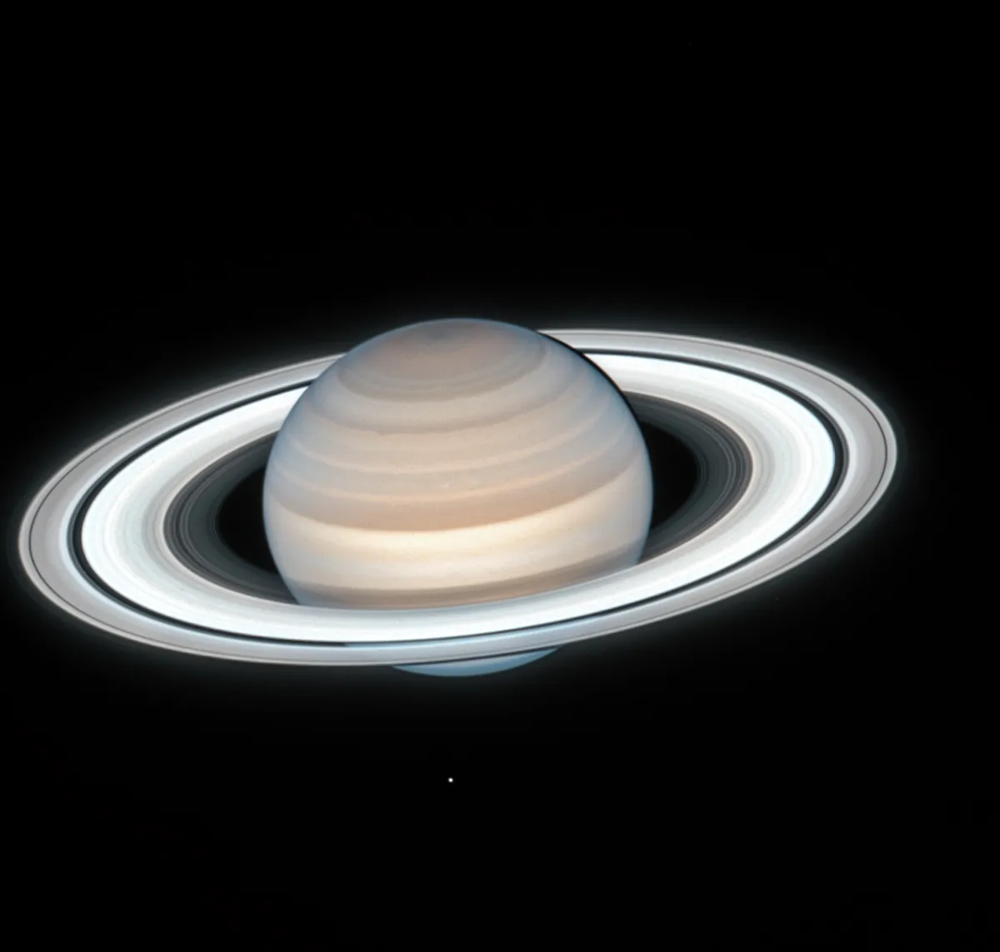

Saturno
Introdução
Saturno é o sexto planeta a partir do Sol e o segundo maior do Sistema Solar. Classificado como um gigante gasoso, destaca-se pelo seu icónico e complexo sistema de anéis visíveis mesmo com telescópios amadores terrestres.
Características Físicas
A característica mais impressionante de Saturno são os seus anéis planetários, formados maioritariamente por pedaços de gelo de água e poeira rochosa, que variam de tamanho desde grãos microscópicos até blocos com metros de extensão. Saturno possui também a menor densidade média entre todos os planetas, inferior à da água líquida.

Atmosfera
A atmosfera exterior de Saturno é composta por cerca de 96,3% de hidrogénio molecular e 3,2% de hélio. Ventos violentos que podem atingir os 1.800 km/h cortam as suas camadas gasosas superiores, gerando tempestades de longa duração e uma intrigante formação geométrica hexagonal persistente no seu polo norte.
Exploração Espacial
Após os voos rasantes das sondas Pioneer 11 e Voyager, a missão orbital Cassini-Huygens (2004–2017) revolucionou o nosso conhecimento sobre o planeta. A missão libertou a sonda Huygens na densa atmosfera da lua Titã e estudou detalhadamente os géiseres de água subterrânea expelidos pela lua gelada Encélado.
Dados Comparativos
- Diâmetro: 116.460 km
- Massa: 95,2 massas terrestres
- Gravidade: 10,44 m/s²
- Dia (Rotação): 10h 33m
- Luas: 146 conhecidas (incluindo Titã e Encélado)
Citação Científica
"Nenhum outro mundo no Sistema Solar desperta tanta admiração e curiosidade geométrica quanto a joia dos anéis."